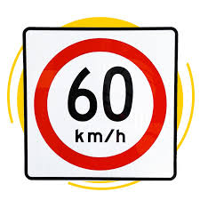
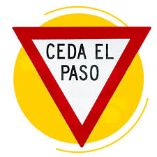

Señales Restrictivas
Indican un movimiento, una limitación física o una prohibición.

Alto

Límite de Velocidad

Ceder el Paso

Prohibido Estacionarse
Señales Preventivas
Indican al usuario la existencia de algún peligro potencial.

Vialidad dividida en un solo sentido

Vialidad dividida

Señal de cruce con vía férrea

Anchura libre
Señales Turísticas Y de Servicios
Informan de un servicio o de un lugar de interés turístico o recreativo.

Gasolinera

Área recreativa

Estacionamiento para casas rodantes

Teléferico